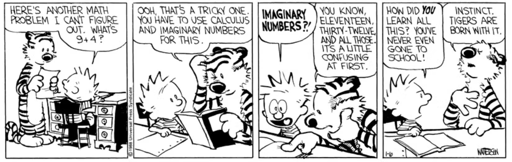
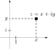
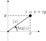
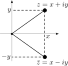

Complex Numbers
Introduction to Engineering Mathematics
What are complex numbers?

Motivation: working with “impossible” numbers
At first, this expression looks like complete nonsense: \[ \sqrt{1 + \sqrt{-3}} + \sqrt{1 - \sqrt{-3}} \]
But is it really?
Benefit: solving quadratic equations
Find \(x\) so that \(x^2 - 2x + 2 = 0\).
- As \(D = - 4 < 0\), there are no real solutions
- If we set \(i = \sqrt{-1}\), then we find two solutions.
OK to calculate with \(i\), as long as we remember \[ \boxed{i^2 = -1.} \]
Number systems
| Symbol | Elements | Used for |
|---|---|---|
| \(\mathbb{N}\) | 0, 1, 2, … | Counting |
| \(\mathbb{Z}\) | …, -1, 0, 1, 2, … | Adding/subtracting |
| \(\mathbb{Q}\) | Fractions \(n/m\) | Dividing |
| \(\mathbb{R}\) | \(\mathbb{Q}\) and irrational numbers: \(e\), \(\pi\), … | Limits |
| \(\mathbb{C}\) | \(a + ib\), with \(a, b \in \mathbb{R}\) | Solving equations |
Cartesian and polar representation
Graphical representation of complex numbers
If \(z = x + iy\) is a complex number, then
- \(\operatorname{Re}(z) = x\) (the real part)
- \(\operatorname{Im}(z) = y\) (the imaginary part)
are both real numbers and \((x, y)\) determines a point in the plane.

Argand plane:
- \(x\)-axis: Real axis
- \(y\)-axis: Imaginary axis
Example
In the complex plane, find the location of:
- \(z_1 = 1\)
- \(z_2 = 2 + 3i\)
- \(z_3 = -2i\)
- \(S = \{ z\in\mathbb{C}: \operatorname{Re}(z) \le 1\}\)
Modulus and argument
- Modulus (absolute value) of \(z\): distance to the origin. \[ |z| = d(z, O) = \sqrt{x^2 + y^2}. \]
- Argument of \(z\): angle with positive \(x\)-axis. \(\operatorname{Arg}(z) = \theta \in (-\pi, \pi]\) if \[ \tan \theta = \frac{y}{x}. \]

Finding the argument (continued)
If \(z\) is in quadrant 1 or 4, then \[ \theta = \tan^{-1}(\frac{y}{x}). \] Otherwise (\(z\) in quadrant 2 or 3) \[ \theta = \pi + \tan^{-1}(\frac{y}{x}). \]
Polar representation of complex numbers
If \(r\) is the modulus and \(\theta\) the argument of \(z = x + iy\), then \[ \left\{ \begin{array}{l} x = r \cos \theta \\ y = r \sin\theta \end{array} \right. \]
This gives us the polar representation of \(z\): \[\begin{align*} z & = x + iy \\ & = \boxed{r( \cos \theta + i \sin \theta) } \end{align*}\]
Example
Find the polar representation of
- \(z_1 = i\)
- \(z_2 = 1 + i\)
- \(z_3 = - \sqrt{3} - i\)
Complex conjugate
If \(z = x + iy\), then the complex conjugate \(\bar{z}\) is given by \[ \bar{z} = x - iy. \]
Properties:
- \(\operatorname{Re}(\bar{z}) = \operatorname{Re}(z)\)
- \(\operatorname{Im}(\bar{z}) = -\operatorname{Im}(z)\)
- \(|\bar{z}| = |z|\)
- \(\operatorname{Arg}(\bar{z}) = - \operatorname{Arg}(z)\)

Calculating with complex numbers
Adding and subtracting complex numbers
Complex numbers can be added/subtracted component-wise: if \(z = x + iy\) and \(w = a + ib\), then \[\begin{align*} z \pm w & = (x + iy) \pm (a + ib) \\ & = (x \pm a) + i(y \pm b) \end{align*}\]
This has a nice geometric interpretation via the parallellogram rule:
- Draw a parallellogram with sides \(z\) and \(w\)
- \(z+w\) is at the end of the diagonal
Multiplying complex numbers
If \(z = x + iy\) and \(w = a + ib\), then (using \(i^2 = -1\)) \[\begin{align*} z w & = (x + iy) \cdot (a + ib) \\ &= (xa - yb) + i(ya + xb) \end{align*}\]
Properties:
- \(z \bar{z} = |z|^2\)
- \(\overline{zw} = \bar{z} \cdot \bar{w}\)
Product of complex numbers in polar form
Write \[\begin{align*} w & = r(\cos \theta + i\sin\theta) \\ z & = s(\cos \phi + i \sin \phi) \end{align*}\]
Then we get the following nice form for the complex product: \[ wz = \underbrace{rs}_{|wz|}( \cos(\underbrace{\theta + \phi}_{\operatorname{Arg}(wz)}) + i\sin(\theta + \phi)) \]
In particular, we get
- \(|wz| = rs = |w||z|\)
- \(\operatorname{Arg}(wz) = \theta + \phi = \operatorname{Arg}(w) + \operatorname{Arg}(z)\)
De Moivre’s theorem
From the product rule, we get \[\begin{align*} |z_1 z_2 \cdots z_n| & = |z_1||z_2|\cdots |z_n| \\ \operatorname{Arg}(z_1 z_2 \cdots z_n) & = \operatorname{Arg}(z_1) + \cdots + \operatorname{Arg}(z_n). \end{align*}\] Substituting \(z_1 = \ldots = z_n = \cos \theta + i \sin\theta\) gives us De Moivre’s theorem: \[ \boxed{(\cos \theta + i \sin \theta)^n = \cos(n\theta) + i\sin(n \theta).} \]
Division of complex numbers
We put \[ \frac{z}{w} = \frac{x + iy}{a + ib}. \]
- How can we make sense of this complex number?
- Multiply by the conjugate: \[ \frac{z}{w} = \frac{x + iy}{a + ib} \frac{a - ib}{a - ib} = \frac{ax + by}{a^2 + b^2} + i \frac{ay - bx}{a^2 + b^2}. \]
Properties: \[ |z/w| = |z|/|w| \quad \text{and} \quad \operatorname{Arg}(z/w) = \operatorname{Arg}(z) - \operatorname{Arg}(w). \]
Useful properties of complex numbers
- \(\overline{z + w} = \bar{z} + \bar{w}\)
- \(\overline{zw} = \bar{z} \bar{w}\)
- \(\bar{\bar{z}} = z\)
- \(zw = 0\) iff \(z = 0\) or \(w = 0\)
Property: to take the conjugate of a complicated expression, it suffices to take the conjugate of every term.
Example: Given \(\displaystyle z = i \frac{Z- 1}{Z+1}\), compute \(\bar{z}\).
Examples
- Find the modulus and argument of \(z = (3+5i)(4-2i)\).
- Simplify the complex number \(z = \frac{7 + 3i}{4i}\).
Examples
Simplify the following complex numbers as much as possible:
- \(z = \frac{1+i}{1-i}\)
- \(z = i^{2022}\)
Caveat
Keep in mind that, for complex numbers, \[ \sqrt{ab} \ne \sqrt{a}\sqrt{b}. \]

Source: Tom Gauld